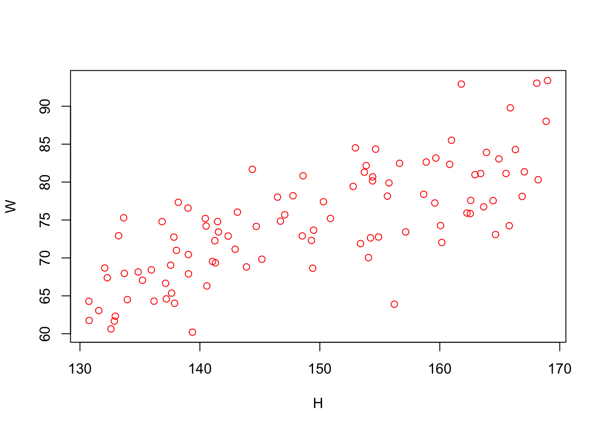
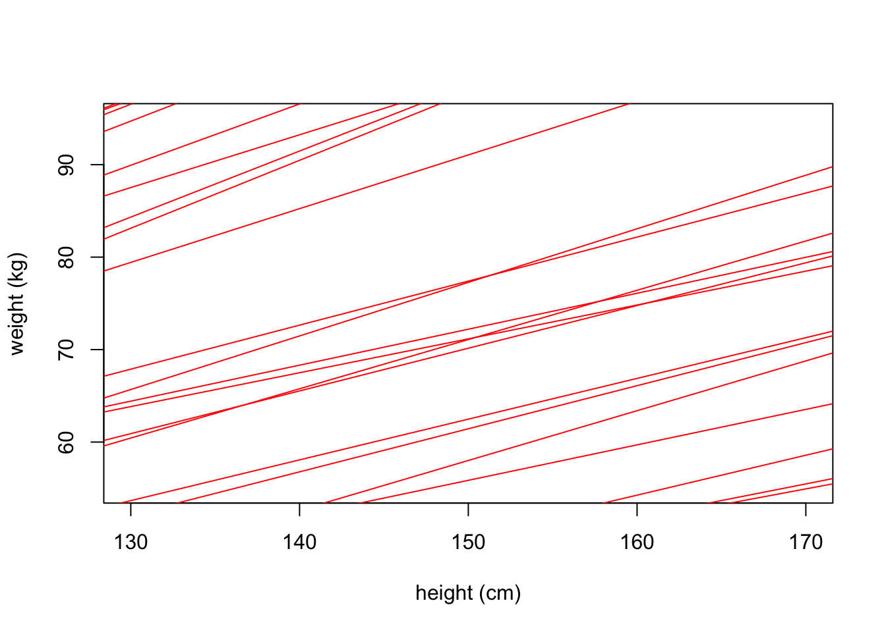

library(tidyverse)
library(magrittr)
library(rethinking)
library(triangle)
library(ggdag)
theme_set(theme_bw())
set.seed(2020)Statistical rethinking (mcelreath)
https://github.com/rmcelreath/stat_rethinking_2023
Inference = a conclusion reached on the basis of evidence and reasoning.
Reasoning = thinking about something in a logical, sensible way.
“Researchers are entrusted with drawing inferences from the data”.
Learning how to perform statistical inference is like learning to write a novel in a foreign language (statistics and probability theory).
The cycle of science
Data analysis pipeline
Bayes’ rule/theorem
\[ P(A,B) = P(A \mid B) P(B) \]
\[ P(B,A) = P(B \mid A) P(A) \]
\[ P(A,B) = P(B,A) \]
\[ P(A \mid B) P(B) = P(A,B) = P(B,A) = P(B \mid A) P(A) \]
\[ P(A \mid B) = \frac{P(B \mid A) P(A)}{P(B)} \]
\[ P(H \mid D) = \frac{P(D \mid H) P(H)}{P(D)} \]
Bayes’ rule holds for PDFs as it does for probabilities:
\[ p(\theta \mid y) = \frac{p(y \mid \theta) p(\theta)}{p(y)} \] \[ p(\theta \mid y) = \frac{p(y \mid \theta) p(\theta)}{\int_\theta p(y \mid \theta) p(\theta) d\theta} \]
\[ p(\theta \mid y) \propto p(y \mid \theta) p(\theta) = p(y, \theta) \]
\[ \text{posterior} \propto \text{likelihood} \times \text{prior} \]
Frequentist vs Bayesian
| Frequentist | Bayesian |
|---|---|
| Probability is “long-run relative frequency” | Probability is “degree of certainty/relative plausability” |
| \(P(X \mid \theta)\) is a sampling distribution (function of \(X\) with \(\theta\) fixed) |
\(P(X \mid \theta)\) is a likelihood function (function of \(\theta\) with \(X\) fixed) |
| No prior | Prior |
| P-values (NHST) | Full posterior distribution available for summary/decisions |
| Confidence intervals | Credible intervals |
Violates the “likelihood principle”:
|
Respects the “likelihood principle”:
|
| Objective? | Subjective? |
Bayesian inference worfklow
Question/goal [estimand]
Scientific model (of the data generation process, aka generative model)
Statistical model(s) [estimator]
Validate model
Analyze data [estimate]
An estimator is a rule for calculating an estimate of a quantity of interest (the estimand) based on observed data: thus the rule (the estimator), the quantity of interest (the estimand) and its result (the estimate) are distinguished. For example, the sample mean is a commonly used estimator of the population mean (the estimand).
When we take measurements, we are observing samples out of an underlying, typically unknown, generative distribution. If we have a full understanding of the generative distribution, we have learned how the data were generated, and thereby have an understanding of the physical, chemical, or biological phenomena we are studying. Statistical inference involves deducing properties of these (unknown) generative distributions.
Why models?
As scientists, our goal is to learn about how nature works. We can make observations and measurements, and these are usually in the service of gaining an understanding of how nature works. In their book Physical Biology of the Cell, Phillips, et al. write that:
…quantitative data demand quantitative models and, conversely, …quantitative models need to provide experimentally testable quantitative predictions about biological phenomena.
It is in this spirit that we approach parametric inference. Our goal is to model the process of data generation, and using the measured data to learn about the model. This leads to knowledge.
Binomial estimation
Question/goal/estimand
Globe tossing example. Estimate proportion of globe surface covered by water.
Scientific model
ggdag(dagify(
WL ~ p,
exposure = "p",
outcome = "WL",
labels = c(WL = "Fuck", p = "pi")
)) + theme_dag_blank()
\(W,L = f(\pi)\)
Statistical model
Observations (data) and explanations (parameters) are variables.
Observed/known variables are data, unobserved/unknown variables are parameters.
[known/unknown constants]
For each variable, must say how it is generated.
List variables as deterministic or stochastic/distributional functions:
\[ W=3,L=6 \sim \text{Binomial}(\pi) \]
\[ \pi \sim \text{Uniform}(a=0, b=1) \]
Stochastic/distributional functions can also be expressed as probability statements:
[Data distribution/Likelihood function]
\[ P(W = 3,L = 6 \mid \pi) = \text{Binomial}(W = 3, L = 6, \pi) = \frac{(W+L)!}{W!L!} \pi^W (1 - \pi)^L = \\ \frac{(3+6)!}{3!6!} \pi^3 (1 - \pi)^6 = \frac{362880}{4320} \pi^3 (1 - \pi)^6 = 84 \pi^3 (1 - \pi)^6 \]
[Prior distribution]
\[ P(\pi \mid a=0,b=1) = \text{Uniform}(\pi, a=0, b=1) = \frac{1}{b - a} \\ = \frac{1}{1 - 0} = 1 \]
Bayesian estimator (posterior \(\propto\) likelihood \(\times\) prior):
\[ P(\pi \mid W = 3, L = 6) \propto \text{Binomial}(W = 3, L = 6, \pi) \times \text{Uniform}(\pi, a = 0, b = 1) \]
\[ P(\pi \mid W = 3, L = 6) \propto 84 \pi^3 (1 - \pi)^6 \times 1 \]
\[ P(\pi \mid W = 3, L = 6) \propto \pi^3 (1 - \pi)^6 \]
WL = c("W", "W", "L", "L", "L", "L", "W", "L", "L")
W = sum(WL == "W")
L = sum(WL == "L")
#W = 10
#L = 20
p = seq(from = 0, to = 1, len = 1000)
a = 0
b = 1
binomial <- function(W, L, p) {
return(factorial(W + L)/(factorial(W)*factorial(L)) * p^W * (1 - p)^L)
}
uniform <- function(p, a, b) {
return(1/(b - a))
}
likelihood = binomial(W, L, p)
prior = uniform(p, a, b)
#likelihood = dbinom(W, W+L, p)
#prior = dunif(p, a, b)
posterior = likelihood * prior / sum(likelihood)
plot(posterior ~ p)Validate model
Analyze data
Linear regression
Question/goal [estimand]: State a clear question (inferential or descriptive)
- Describe association between (adult) weight and height
Scientific model: Sketch the causal assumptions (DAG)
Height → Weight ← [Unobserved]
Weight is some function of height [and other unobserved variables/influences] \(W = f(H,U)\)
Statistical model: Use the sketch to define a generative model
What is this function \(f\) ?
How does height influences weight?
For example, a linear function: \(W = \alpha + \beta H + U\)
It should be able to generate realistic data!
Statistical model: Use the generative model to build an estimator
We want to estimate how the average weight changes with height.
How does average weight changes with height?
\(E(W_i \mid H_i) = \alpha + \beta H_i\)
In Bayesian inference the estimator is always the posterior distribution.
\(P(\alpha, \beta, \sigma \mid H_i, W_i) = \frac{P(W_i \mid H_i, \alpha, \beta, \sigma) P(\alpha, \beta, \sigma)}{Z}\)
In conventional statistical model notation:
\[ W_i \sim \text{Normal}(\mu_i, \sigma) \\ \mu_i = \alpha + \beta H_i \\ \alpha \sim \text{Normal}(0, 10) \\ \beta \sim \text{Uniform}(0, 1) \\ \sigma \sim \text{Uniform}(0, 10) \\ \]
\(W\) is distributed normally with mean that is a linear function of \(H\).
Prior predictive distribution.
Validate statistical model
- Analyze data simulated using the generative model.
Use the statistical model to analyze data/calculate estimate
Estimate = Posterior distribution.
Posterior predictive distribution.
An estimator is a rule for calculating an estimate of a quantity of interest (the estimand) based on observed data: thus the rule (the estimator), the quantity of interest (the estimand) and its result (the estimate) are distinguished. For example, the sample mean is a commonly used estimator of the population mean (the estimand).
Generative model
sim_weight <- function(H, beta, sd) {
U = rnorm(length(H), 0, sd)
W = beta * H + U
return(W)
}
n = 100
H = runif(n, min = 130, max = 170)
W = sim_weight(H, beta = 0.5, sd = 5)
plot(W ~ H, col = "red")
Conventional statistical model notation
List the variables
Define each variable as a deterministic or distributional/stochastic function of the other variables
\[ W_i = \beta H_i + U_i \\ U_i \sim \text{Normal}(0, \sigma) \\ H_i \sim \text{Uniform}(130, 170) \]
Variables on the left, functions on the right (equal sign for deterministic functions, tilde sign for distributional/stochastic functions).
Prior predictive distribution
n = 1000
a = rnorm(n, 0, 10)
b = runif(n, 0, 1)
plot(NULL,
xlim = c(130, 170),
ylim = c(55,95),
xlab = "height (cm)",
ylab = "weight (kg)")
for(j in 1:50) abline(a = a[j], b = b[j], col = "red")
n = 10
H = runif(n, min = 130, max = 170)
W = sim_weight(H, beta = 0.5, sd = 5)
m3.1 = quap(
alist(
W ~ dnorm(mu, sigma),
mu <- a + b * H,
a ~ dnorm(0, 10),
b ~ dunif(0, 1),
sigma ~ dunif(0, 10)
), data = tibble(W, H))
precis(m3.1) mean sd 5.5% 94.5%
a -3.6113 8.37377 -16.9942 9.7716
b 0.5213 0.05564 0.4324 0.6102
sigma 4.4520 1.00455 2.8465 6.0574Lost and found
In frequentist inference, parameters are considered to be fixed/constants but unknown.
In Bayesian inference, parameters are considered to be random variables instead of constants.
Non-parametric (vs parametric) inference is statistical inference where no model is assumed; conclusions are drawn from the data alone.
The bias of an estimate is the difference between the expected value of the point estimate and the value of the parameter. The bias is typically small. Biased and unbiased estimators of the variance differ by a factor of \(n/(n−1)\), which is negligible when \(n\) is large.